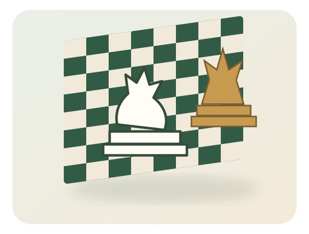

Learn the idea
Short explanations introduce the concept before you see it on a board.
Build a stronger chess foundation with clear lessons, practical opening guides, strategic ideas, and puzzles that make you think.

Choose a topic and turn chess ideas into habits you can use over the board.
Learn the rules, piece movement, checkmate, and special moves.
Explore lessons ↗ 02 · THE FIRST MOVESUnderstand opening principles and explore ten popular openings.
Explore openings ↗ 03 · MAKE A PLANSpot tactics, improve your pieces, and create purposeful plans.
Study strategy ↗ 04 · FINISH STRONGConvert advantages with active kings, pawn technique, and basic mates.
Study endgames ↗ 05 · PUT IT TO THE TESTPractice tactical patterns with move validation, hints, and feedback.
Solve puzzles ↗Take a few minutes to find a forcing move. Read the position, look for checks and captures, and calculate before you play.
Try today's challenge →Short explanations introduce the concept before you see it on a board.
Follow example positions and opening moves one step at a time.
Use puzzles and quick quizzes to reinforce what you have learned.